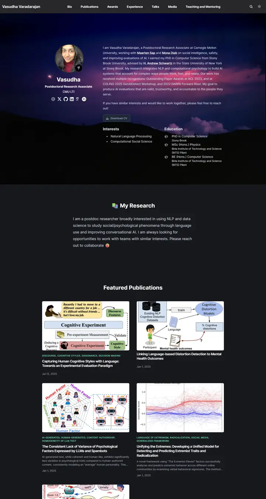
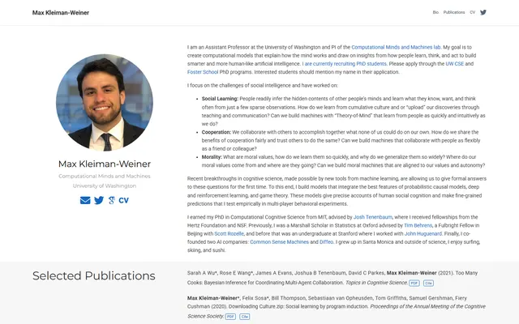

Vasudha Varadarajan
A dusk photograph over a dark hillside, then a gallery wall of figure cards labelled in small mint capitals.

Checked against the rendered page.
Why it is here
A dark theme with an atmospheric photo hero, then a featured-publication card grid that uses figure teasers and coloured topic tags. It adds a strong visual-card style.
Overview
Color Palette
Typography
Inter var
Vasudha Varadarajan, computational social science, psychology-oriented
Abstract · Method · Results · BibTeX — 0123456789
Spacing & Shape
Page Modules
Guidelines
More like this

Erik Wijmans
A tidy research portfolio under a slate-navy bar: big airy Roboto headings, numbered research themes, and paper cards laid on alternating grey bands like files on a light table.

Max Kleiman-Weiner
A tidy faculty card on a lab bench: round portrait and light Montserrat on the left, dense Roboto prose on the right, and a pale grey band where the best papers sit.

Amir Bar
A clean faculty prospectus in Imperial blue: Inter on white, pill links, and paper cards that lift a few pixels when you reach for them.

Anagh Malik
The Barron table, warmed with apricot: Lato at 14px, blue links that flash orange, and the papers that matter sitting in a band of late-afternoon light.

Christoph Feichtenhofer
A conference-hall banner in Facebook blue, then a long ledger of papers in red ink, green venues and justified grey abstracts.

David B. Lindell
A lab notebook typeset by a careful editor: Source Serif prose, Source Sans labels, one clear blue, and every paper filed with its photograph.